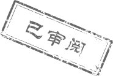

<!--工作报告已审阅开始-->
<div class="workStatement_checked_box workStatement_checked_boxshadow MS_check_details f16">
    <div class="workStatement_head f16">
        <span>
        	填写人：<i>{{work.work_detail.author}}</i>
        </span>
        <span ng-if="work.work_detail.type==1">日报</span>
		<span ng-if="work.work_detail.type==2">周报</span>
        <span>
        	<a ui-sref="main.workStatement.myWorkStatementTable" href="javascript:;" ></a>
        </span>
    </div>
    <!--本日工作项-->
    <div class="workStatement_project today_work">
    	<div class="same_style check_project f16">
    		<i class="work_icon" ng-if="work.work_detail.type==1">本日的工作项</i>
			<i class="work_icon" ng-if="work.work_detail.type==2">本周的工作项</i>
    	</div>
    	<div class="job_content this_week_content MS_week_content">
			<textarea cols="3" rows="12"class="f16" data-ng-model="work.work" disabled></textarea>

		</div>
    </div>
    <!--明日工作计划-->
    <div class="workStatement_project tomorrow_work">
    	<div class="same_style check_project f16">
    		<i class="work_icon" ng-if="work.work_detail.type==1">明日工作计划</i>
			<i class="work_icon" ng-if="work.work_detail.type==2">下周工作计划</i>
    	</div>
    	<div class="job_content this_week_content MS_next_content">
			<textarea cols="3" rows="12"class="f16" data-ng-model="work.plan" disabled></textarea>
		</div>
		 <!--已审阅图片-->
		<div class="already_checked" ng-if="work.work_detail.status==2">
			
		</div>
    </div>
   
</div>
<!--工作报告已审阅结束-->